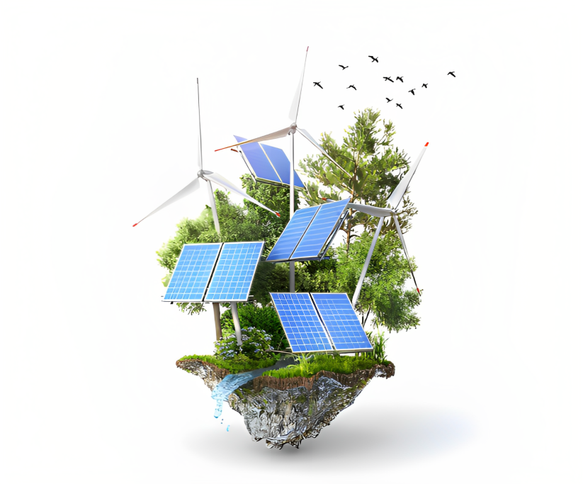
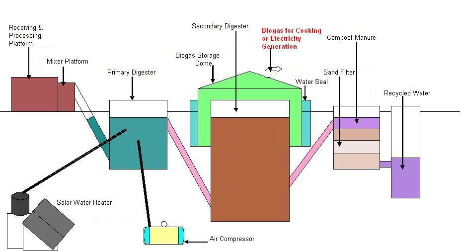

Urja Biogas plant is totally built in brick work or RCC. It is a cylindrical plant having two chambers and a top cover. The lower chamber acts as a digester as well as gasholder. As the gas is produced, the pressure of the gas pushes the fermenting substrate from the lower chamber to the upper chamber and from there it flows to the waste disposal area for composting it with crop residues. When the gas is utilized, the pressure in the lower chamber gets reduced and it causes the remaining mixture in the upper chamber to flow down to the lower chamber. This induces automatic stirring action of the fermenting slurry, which increases the efficiency of gas production.
Besides cattle dung and food waste many organic materials such as poultry droppings, press-mud and molasses produced by sugar mills, spent wash discharged by distilleries, dairy sludge, oil-mill sludge, vegetable waste from market, waste from fruit processing units, bio-medical waste from hospitals, slaughter house waste, waste food from public eating places and hostels, decayed grains from warehouses, water hyacinths and seeds from Jathropha curcas plants etc. can be used for generating biogas and use of residual spent slurry as organic manure.

Avail our affordable energy solutions & enjoy these benefits!
The impending scarcity of petroleum threatens the world’s fuel supply. Mankind can face this threat successfully with the help of biogenous methane, but the world is prevented from taking full advantage of this technology, because its practitioners ignore the basic tenet of science, namely that output of work is dependent on the energy available for doing that work. The current practice of using low calorie inputs like cattle dung, distillery effluent, municipal solid waste or sewerage, makes methane generation highly inefficient. By using feedstock having high calorific and nutritive value to microbes, the efficiency of methane generation can be increased by several orders of magnitude.

Avail our affordable energy solutions & enjoy these benefits!
The impending scarcity of petroleum threatens the world’s fuel supply. Mankind can face this threat successfully with the help of biogenous methane, but the world is prevented from taking full advantage of this technology, because its practitioners ignore the basic tenet of science, namely that output of work is dependent on the energy available for doing that work. The current practice of using low calorie inputs like cattle dung, distillery effluent, municipal solid waste or sewerage, makes methane generation highly inefficient. By using feedstock having high calorific and nutritive value to microbes, the efficiency of methane generation can be increased by several orders of magnitude.